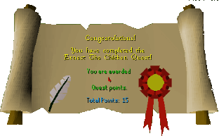

Ernest the Chicken
Description: Veronica is very worried. Her fiancee went into the big spooky manor house to ask for directions. An hour later and he's still not out yet.Difficulty: Novice
Length: Medium
Items & Skills Needed:
Reward: 4 Quest points, 300 coins
Instructions:
Talk to Veronica outside the Mansion in Draynor. She will tell you about Ernest. He has gone into the house for an hour and hasn't come out yet. Tell her that you will help her to find Ernest.
Go inside the house and to the top floor where you'll find Professor Oddenstein. Talk to him and ask about Ernest. He will explain that he accidentally changed Ernest into a chicken and that his machine is broken. To fix it, you must retrieve three items: an oil can, rubber tubing, and a pressure gauge.
Go down to the 2nd floor, and then go to the southeast room and pick up fish food.
Go to the 1st floor and head to the western room and grab poison. Use poison on fish food.
Head to the room south of the poison and search the bookcase on the western side on the wall to gain access to a secret room. Go down the ladder into the basement, which is a mini maze.

Use the following lever sequence:
Pull levers B and A down. Enter door 1.
Pull lever D down. Enter doors 2, then 3.
Pull levers B and A up. Enter doors 3, 4, and 5.
Pull levers E and F down. Enter doors 6 and 7.
Pull lever C down. Enter doors 7 and 6.
Pull lever E up. Enter doors 6, 8, and 3.
Go through door 9 and grab the oil can.
Go back up to the 1st floor east room and grab the spade. Head outside, then north, west, and south to find a pile of compost. Use the spade on the compost to get a key.
Then go southwest outside to the fountain, use the poisoned fish food on it, and search the fountain to get the pressure gauge.
Return inside and unlock the door behind the main stairs with the skeleton inside. Ignore the skeleton and grab the rubber tube. Use the key on the door to leave.
Return to Professor Oddenstein with all three items. He will fix the machine and turn Ernest back into a human. Ernest will thank and reward you.
Congratulations, Quest Complete!

This quest guide was written on RuneHQ by Henry-X. Thanks to Weezy and Sythion for corrections.
This quest guide was entered into the database on Thu, Feb 19, 2004, at 02:33:04 PM by Weezy and was last updated on Thu, Sept 25, 2025, at 06:47:32 PM by Halogod35.